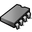
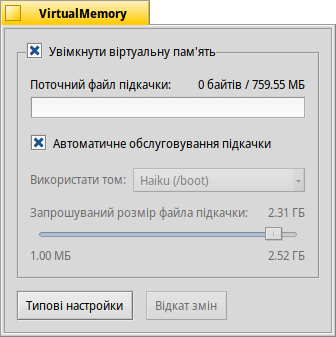

 VirtualMemory (Файл підкачки)
| Deskbar: | ||
| Розташування: | /boot/system/preferences/VirtualMemory | |
| Налаштування: | ~/config/settings/kernel/drivers/virtual_memory ~/config/settings/VM_data – зберігає позицію вікна панелі. |
Механізм управління віртуальною пам'яттю дозволяє застосувати файл підкачки на жорсткому диску, якщо оперативну пам'ять можна використовувати більш розумно для інших речей. Отже, навіть якщо у Вас багато оперативної пам'яті, ідея пустити в дію віртуальну пам'ять ніколи не буде поганою.
Як правило, файл підкачки записується на завантажувальний розділ. Якщо на ньому бракує вільного місця, Ви можете вимкнути опцію «Автоматичне обслуговування підкачки» і вибрати інший змонтований розділ зі спливаючого меню. Розмір файлу підкачки встановлюється за допомогою повзунка нижче.
Якщо Ви часто стикаєтеся з перевантаженням диска через те, що система віртуальної пам'яті підкачує сторінки з даними, можете спробувати використати окремий жорсткий диск для файлу підкачки, щоб уникнути перевантажень вводу/виводу. Просто ще один розділ на тому самому жорсткому диску з Вашою системою/даними не допоможе. У такому випадку, збільшення оперативної пам'яті буде найбільш ефективним виходом…
| повертає все до стандартних (типових) значень. | ||
| повертає настройки, які були встановлені до запуску VirtualMemory. |